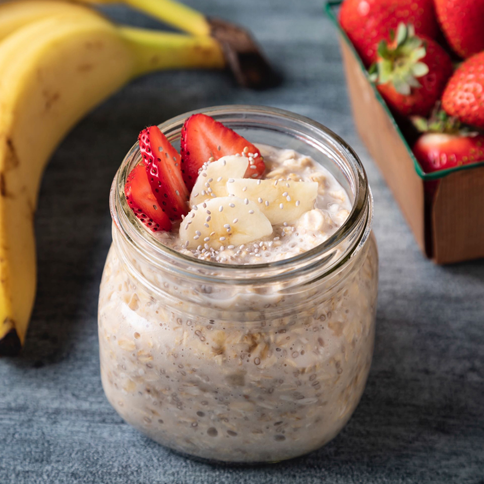

Oats

Ingredients
- 1/2 cup oats
- 1/2 cup vanilla oat milk
- 1 spoonful vanilla greek yogurt
- 1 spoonful peanut butter
- 1 spoonful chia seeds
- Dash of vanilla extract
- Dash of cinnamon
- Bananas or other fruit as preference
Steps
- In a container or jar, add the oats, vanilla oat milk, vanilla greek yogurt, peanut butter, and chia seeds together and mix well
- Add the dash of vanilla extract and cinnamon and mix
- Cover and refrigerate overnight or for more than 8 hours
- Add in sliced bananas or strawberries or other fruit to preference